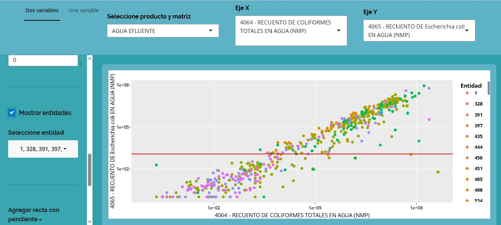
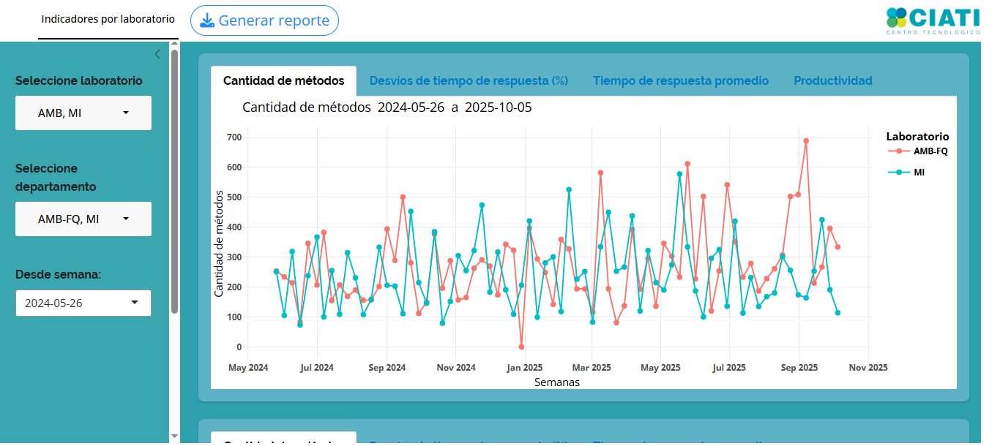
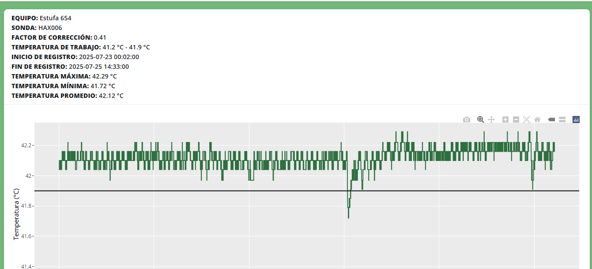
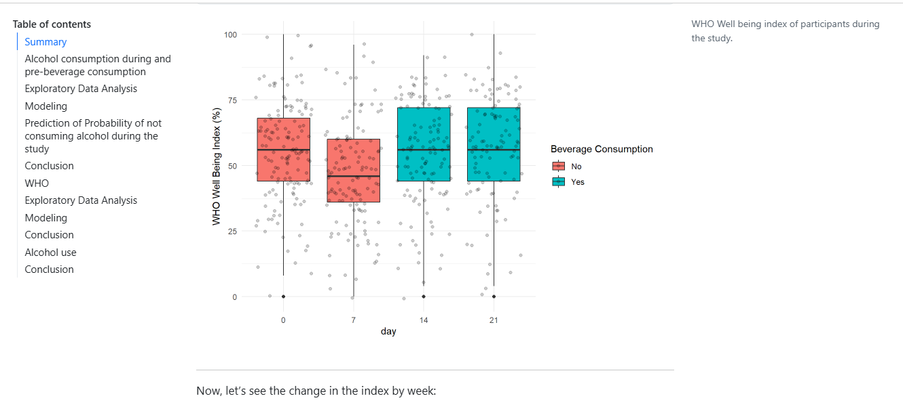
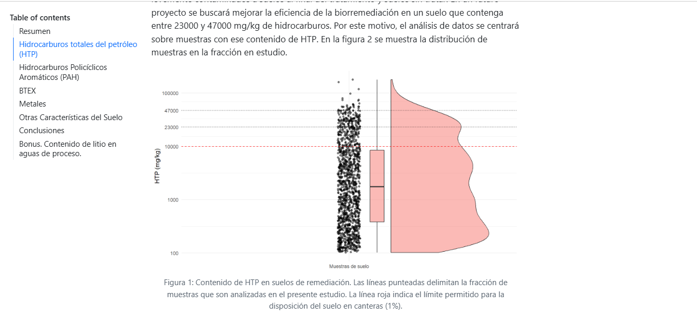

About me
I'm Mauricio, a data analyst based in Neuquen, Argentina.
I really enjoy solving complex analytical problems. Here are some of the problems I've solved throughout my carreer:
- Increased productivity by automatizing data analysis.
- Supported decision-making by delivering clean, insightful data visualizations.
- Improved communicaton by writing concise yet informative reports that are both visually appealing and interactive.
- Developed a machine learnign tool to reduce the error rate of analytical results.
Do you have any challenges like these? I'd happy to help!
Portfolio
A Shiny Application for Data Visualization.
A Dashboard of KPIs.
An Application for Automatic Data Analysis.
Data Analysis and Modeling of a Longitudinal Study. A Quarto Report.
Data Analysis of oil polluted soils. A Qaurto Report.
Resume
Languages
English
German
Spanish
Contact
- República de Italia 151, Neuquén, Neuquén
- mauricio.alessandrello@gmail.com
- 54 299 6343765